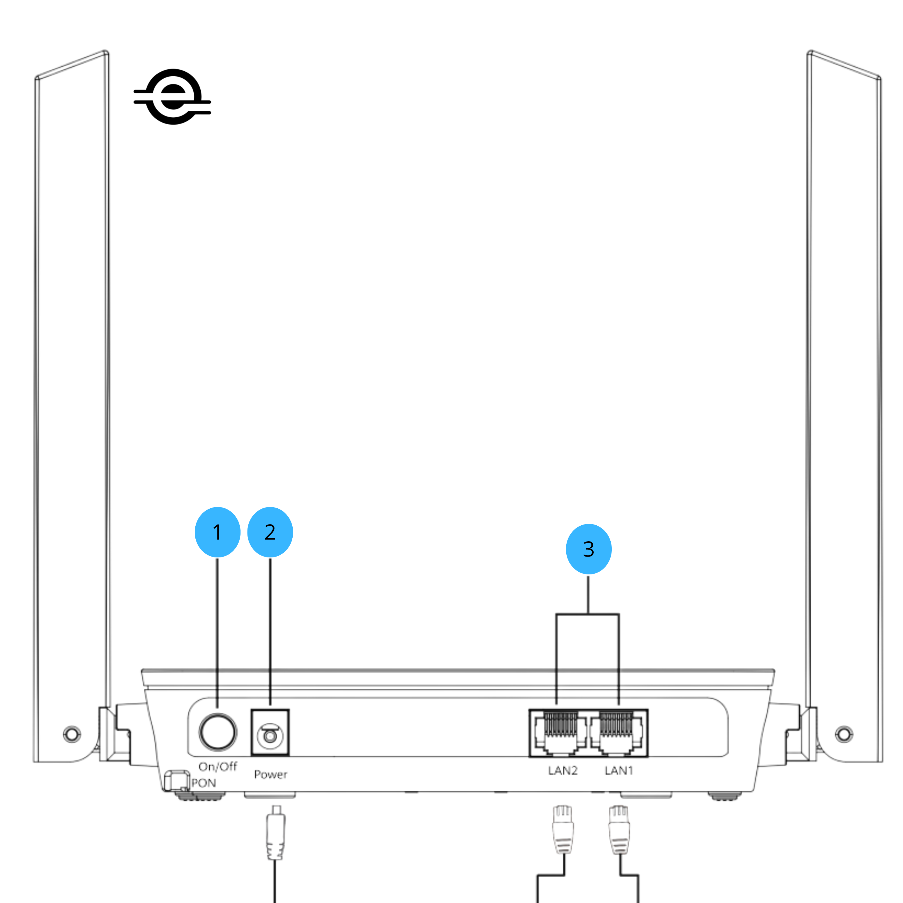
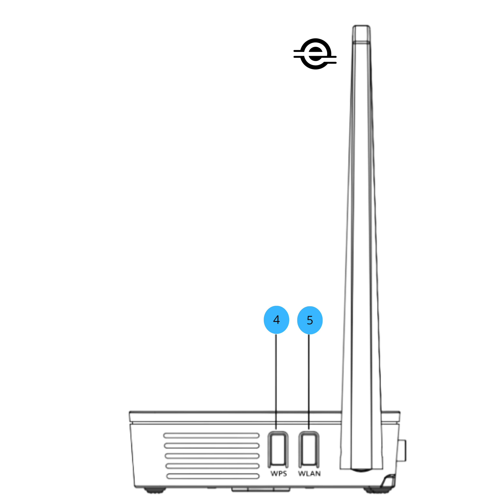
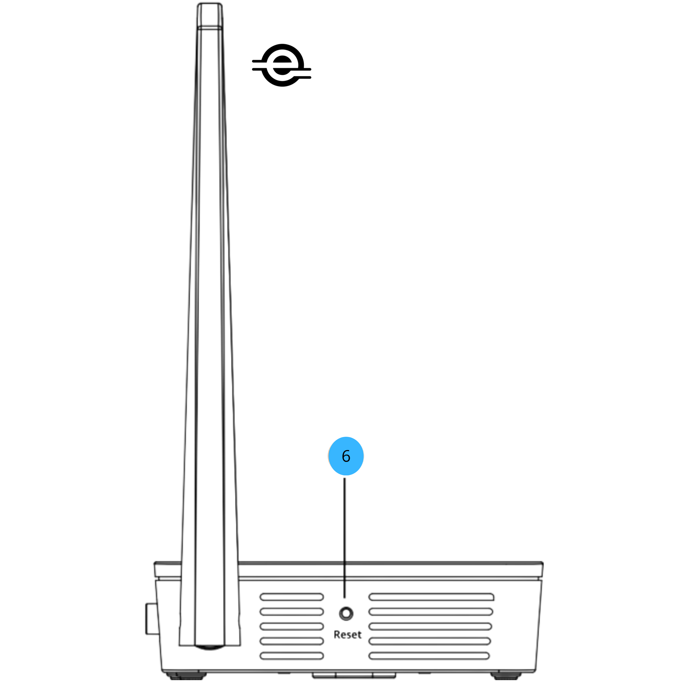
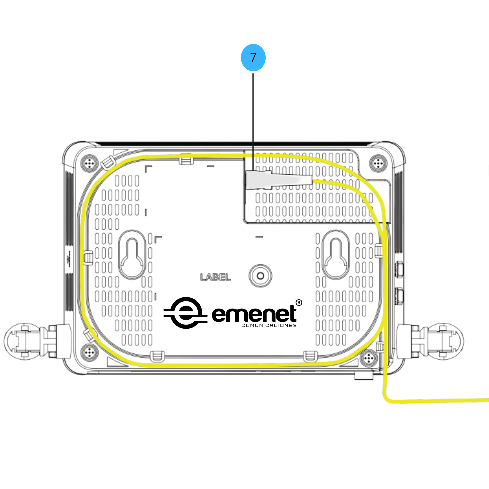
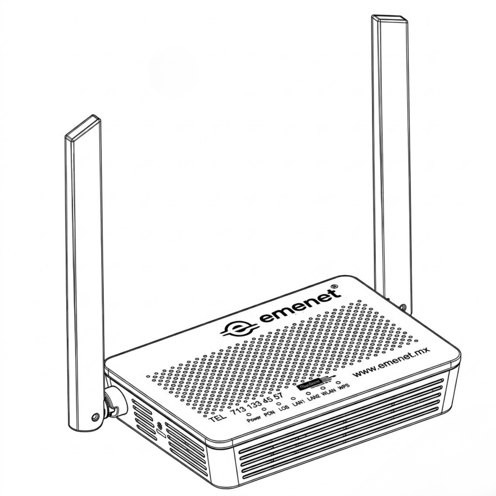

Falla del servicio de internet
Sigue estos pasos para identificar y resolver problemas con tu conexión.
diagrama equipo ONT — puertos y botones ▼

1
On / Off
Botón de encendido y apagado del equipo
2
Power
Fuente de energía
3
LAN
Puertos LAN para cables de red RJ45

4
WPS
Inicia una negociación con otro dispositivo para conectarse a las WLAN sin requerir contraseña
5
WLAN
Activa o desactiva las redes inalámbricas WLAN

6
Reset
Presionar más de 10 segundos para reiniciar de fábrica el equipo

7
Fibra
Puerto para conector de fibra óptica SC/APC

| Indicador | Estado | Descripción |
|---|---|---|
| Power | Verde | La ONT está encendida |
| Apagado | No tiene corriente eléctrica | |
| PON / LOS | Apagados | ONT bloqueada. Contactar soporte |
| Verde / Rojo | ONT bloqueada. Contactar soporte | |
| Verde / Apagados | Conexión establecida | |
| Rojo / Apagados | Sin conexión de fibra | |
| LAN1 / LAN2 | Verde | Conexión normal |
| Parpadeando | Transmitiendo datos | |
| Apagado | Sin conexión | |
| WLAN | Verde | WiFi activo |
| Parpadeando | Transmitiendo datos | |
| Apagado | WiFi desactivado | |
| WPS | Verde | WPS activo |
| Parpadeando | Conectando dispositivo nuevo | |
| Apagado | WPS desactivado |
1. Inspección visual ▼
- Revisa visualmente la fibra o cable (que no esté doblado o dañado).
- No desconectes la fibra óptica.
- Verifica que el equipo esté conectado y encendido.
- Revisa los LEDs: deben estar en verde (POWER, PON, WLAN).
- Si ves alguna luz roja, puede indicar falla.
- Confirma en tu celular que aparezcan las redes WiFi (2.4G y 5G).
2. Luz roja en el equipo ▼
Indica un problema en la fibra óptica. Comunícate con soporte técnico para atención inmediata.
3. Tengo WiFi pero no hay internet ▼
- Reinicia el equipo (desconéctalo 1 minuto).
- Intenta conectarte desde otro dispositivo.
- Olvida la red WiFi y vuelve a conectarte.
- Prueba con cable Ethernet si es posible.
4. Internet lento ▼
- Verifica que no haya más de 8 dispositivos conectados.
- Acércate al módem (el alcance es limitado).
- Desconecta otros equipos y prueba por cable Ethernet.
- Coloca el ONT en un lugar abierto y sin humedad.
5. No aparecen las redes WiFi ▼
- Revisa el LED WLAN (o 2.4G/5G); debe estar en verde.
- Verifica desde otro dispositivo si detecta la red.
- Si el LED WLAN está apagado, presiona el botón WLAN por 10 segundos hasta que encienda.
Preguntas frecuentes
Encuentra respuestas a las dudas más comunes sobre nuestros servicios.
Servicio de Internet ▼
¿Qué interfiere en mi red WiFi?
Obstáculos físicos como paredes y pisos reducen la señal.
La distancia también influye: mientras más lejos estés, menor será la intensidad.
Otras redes o dispositivos pueden saturar el canal WiFi.
La distancia también influye: mientras más lejos estés, menor será la intensidad.
Otras redes o dispositivos pueden saturar el canal WiFi.
Recomendaciones:
- Coloca el módem en un lugar central de tu hogar.
- Evita colocar el módem en espacios cerrados como closets o debajo de muebles.
- Mantén al menos 1 metro de distancia entre el módem y otros dispositivos.
¿Cómo puedo expandir mi señal WiFi?
Se recomienda usar un Access Point conectado por cable Ethernet para mayor estabilidad y
mejor
rendimiento.
¿Cómo valido que mi velocidad sea correcta?
- Cierra aplicaciones que usen internet
- Desconecta otros dispositivos
- Usa cable Ethernet o red 5 GHz cerca del módem
- Realiza la prueba de velocidad: aqui
Resultado esperado: Puede haber una variación de ±15% del plan contratado.
¿Cuál es la diferencia entre 2.4 GHz y 5 GHz?
2.4 GHz: Mayor alcance, menor velocidad.
5 GHz: Mayor velocidad, menor alcance.
5 GHz: Mayor velocidad, menor alcance.
¿Cómo cambio mi contraseña WiFi?
Si el equipo lo permite, el cambio se realiza de forma remota. En caso contrario, se agenda
una
visita técnica.
Soporte Técnico ▼
¿Cómo puedo contactar a soporte?
Tel: 713 133 4557
WhatsApp: 729 179 2524
Zona Ixtlahuaca/Jiquipilco/Temoaya: 713 347 3674
Correo: clientes@emenet.mx
WhatsApp: 729 179 2524
Zona Ixtlahuaca/Jiquipilco/Temoaya: 713 347 3674
Correo: clientes@emenet.mx
Horarios de atención
Lunes a viernes: 9:00 am – 6:00 pm
Sábado: 9:00 am – 3:00 pm
Domingo: Cerrado
Chat Bot disponible 24/7
Sábado: 9:00 am – 3:00 pm
Domingo: Cerrado
Chat Bot disponible 24/7
¿Cuánto tarda una visita técnica?
De 1 a 48 horas dependiendo de la zona y disponibilidad.
Cancelación y Cambios ▼
¿Puedo cancelar el servicio?
Sí, siempre que no tengas adeudos. Es necesario devolver los equipos.
¿Qué pasa si cambio de domicilio?
Puedes solicitar el cambio. Si hay cobertura, se realiza la instalación con costo adicional.
Pagos ▼
¿Hay cargos adicionales?
Sí, pueden aplicar en casos como daños, reparaciones o cambio de domicilio.
¿Qué pasa si no pago a tiempo?
La fecha de pago es del 1 al 5. Después de eso, el servicio se suspende, pero puedes pagar y
se reconecta sin costo.
¿Cuánto tarda la reconexión?
Entre 1 y 5 horas después del pago.
Como pagar ▼
Pago en línea
Ingresa a pagar servicio
Introduce tu número de cliente y realiza el pago.
Activación en máximo 1 hora.
Introduce tu número de cliente y realiza el pago.
Activación en máximo 1 hora.
Depósito en HSBC
Beneficiario: IPTVTEL COMUNICACIONES S DE RL DE CV
Cuenta: 4062409131
Comparte tu comprobante con cobranza.
Cuenta: 4062409131
Comparte tu comprobante con cobranza.
Transferencia bancaria
Banco: HSBC
CLABE: 021453040624091311
Beneficiario: IPTVTEL COMUNICACIONES S DE RL DE CV
Incluye el nombre del titular como referencia.
Comparte tu comprobante con cobranza.
CLABE: 021453040624091311
Beneficiario: IPTVTEL COMUNICACIONES S DE RL DE CV
Incluye el nombre del titular como referencia.
Comparte tu comprobante con cobranza.
Pago en tiendas
OXXO, Farmacia del Ahorro y Financiera del Bienestar
Cuenta: 4741764001982278
Comparte tu comprobante con cobranza.
Cuenta: 4741764001982278
Comparte tu comprobante con cobranza.
¿Necesitas ayuda?
Estamos aquí para ti
Si no encontraste la respuesta que buscabas, nuestro equipo está listo para ayudarte en cualquier momento.